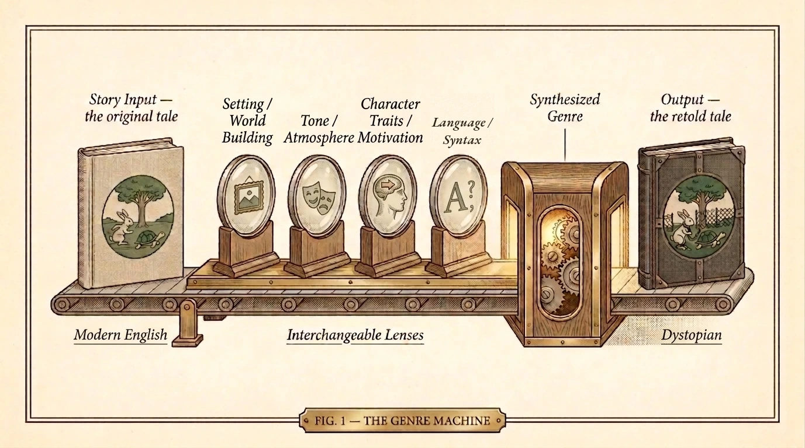

One landscape page. The machine up top, what each lens means below, and a word guide in the corner.
A genre is a family of stories that keep the same promises: how the story should sound, what counts as danger, what an ending is allowed to feel like. Genre exists because those promises are useful — readers use them to know what they are picking up, and writers use these shared settings, tones, character traits, and language styles to build a world fast, or to surprise you by breaking a promise on purpose.
Now imagine placing a familiar story into a machine built around those four promises — a machine that will shape it, recolor it, revise it, and spit out the same story, but… different. That is the machine on the right: every lens is a promise you can turn.

Where and when the story happens, and everything you can see there: how people dress, the light, the weather. That whole visual surface is the aesthetic, and an image that keeps returning until it means something is a motif.
The feeling the story gives off, and the attitude it takes toward its own events — playful, grim, clinical, reverent. The genre also sets the stakes: what stands to be lost, from a scraped knee in slapstick to a soul in cosmic horror.
Who the people are, and what drives them — their motivation. Each genre also picks where the teller stands (the perspective) and reaches for familiar figures like the predator, the regime, or the curse (each one a trope).
How the story sounds when it talks. The teller's voice, the words it picks and how formal they are (diction), and how the sentences are built — short and hard, or long and winding (syntax).
aesthetic — the whole look and feel
diction — word choice, and its formality
motif — an image that repeats to mean
motivation — what a character wants
perspective — where the story is told from
stakes — what stands to be lost
syntax — how sentences are built
trope — a figure a genre reuses
voice — how the teller sounds